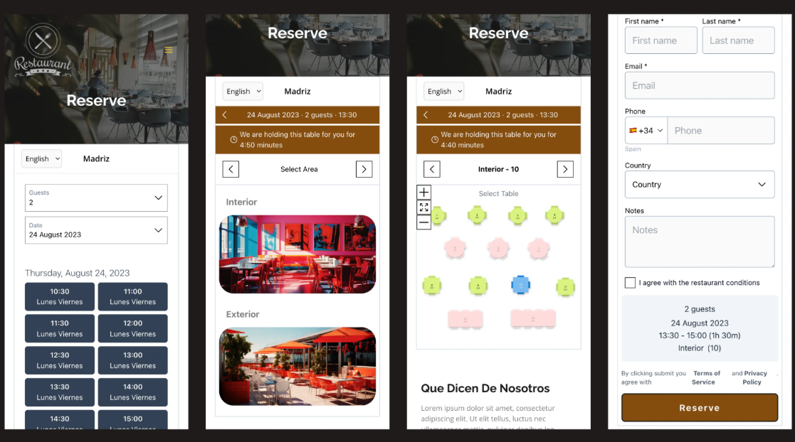
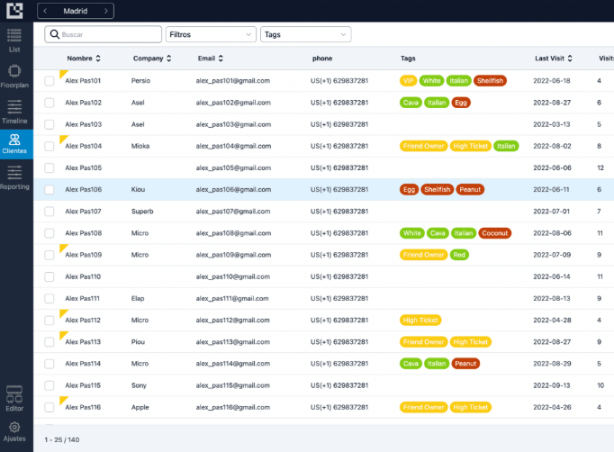
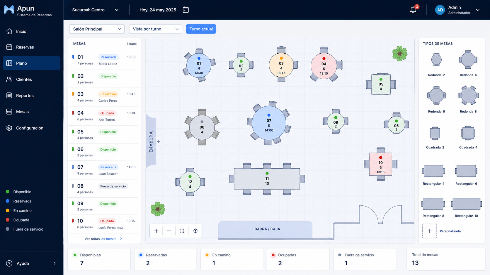
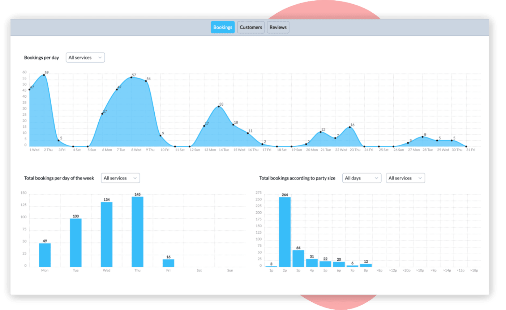

Control de reservas en tiempo real
Gestiona reservas desde una vista clara para confirmar, reprogramar o cancelar en segundos. Evita cruces de horarios y mantiene el servicio ordenado incluso en horas pico.
Centraliza citas, envía recordatorios automáticos y brinda una experiencia rápida para tus clientes. Diseñado para negocios que quieren crecer sin complicarse.
Muchos negocios aún gestionan sus citas con llamadas, mensajes o agendas físicas. Esto genera errores, desorganización y pérdida de oportunidades. Apun automatiza el agendamiento para que propietarios y clientes resuelvan todo en una sola plataforma, de forma simple e intuitiva.
Cada vista esta pensada para ayudarte a operar mejor, atender mas rapido y tomar decisiones con datos claros.

Gestiona reservas desde una vista clara para confirmar, reprogramar o cancelar en segundos. Evita cruces de horarios y mantiene el servicio ordenado incluso en horas pico.

Consulta visitas anteriores, preferencias y notas importantes para ofrecer una atencion personalizada. Tu equipo atiende mejor porque siempre tiene contexto del cliente.

Reune agenda, clientes y configuraciones en un flujo simple para todo el equipo. Menos trabajo manual y mas enfoque en la experiencia del negocio.

Visualiza reservas, demanda por horarios y comportamiento de clientes para decidir con precision. Convierte la operacion diaria en resultados medibles.
Menos llamadas y más foco en atender a tus clientes.
Reduce inasistencias con avisos puntuales y personalizados.
Visualiza reservas en tiempo real y evita sobrecupos.
Reserva rápida, clara y disponible cuando más la necesitan.
80€/mes
Ideal para pequeñas empresas.
Más elegido
120€/mes
Para restaurantes con gestión avanzada.
200€/mes
Para negocios con alta demanda.
| Plan | Precio | Gestión de mesas | Pagos al reservar | Recordatorios SMS | Soporte |
|---|---|---|---|---|---|
| Starter | 80€ | No | No | No | Estándar |
| Pro | 120€ | Sí | No | No | Prioritario |
| Premium | 200€ | Sí | Sí | Sí | Prioritario |
"Antes perdíamos citas por confusiones en WhatsApp. Ahora todo queda ordenado y el equipo trabaja con más tranquilidad." - Laura Mena, Restaurante Wing
"El mejor sistema calidad precio de todo el mercado, sin duda." - Diego Ruiz, Restaurante Maito
"Lo mejor es que no necesitas saber de tecnología para usarlo. Es claro desde el primer día." - Andrés Vega, Restaurante Costa Brava
"Desde que usamos la plataforma, llenamos mejor los horarios de tarde y bajaron mucho las cancelaciones de última hora." - Camila Torres, Barbería Distrito 09
"La vista de reservas nos ayuda a organizar cada turno sin sobrecargar cocina ni sala. El servicio al cliente mejoró desde la primera semana." - Marco Salas, Restaurante Fyn
"Nos encanta porque el equipo confirma y ajusta mesas en segundos. Ahora tenemos más control en horas pico y menos errores de asignación." - Daniela Ríos, Restaurante Nusara
Email: contacto@apun.com
Teléfono: +593 969 433 4567